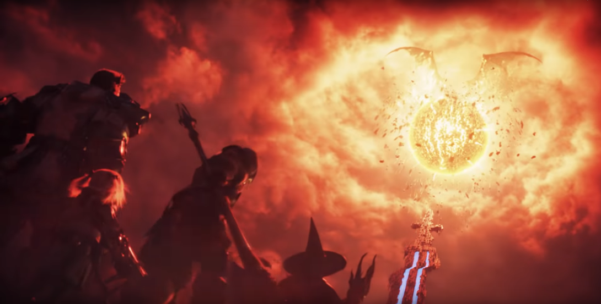

행성 하이델린,
그리고 에오르제아
모든 생명의 근원인 에테르가 가득한 아름다운 별 ‘행성 하이델린’
행성 하이델린에 속한 대륙, 신들에게 사랑받는 땅
‘에오르제아’에서 사람들은 평화롭게 살고 있었다.
어느 날, 에오르제아의 평화롭던 하늘에 뜬 붉은 별이
점점 커지는 것을 보고 사람들은 공포에 휩싸이게 된다.

달의 위성 달라가브
한편, 에오르제아를 침략한 갈레말 제국에 맞서
에오르제아 도시국가 울다하, 그리다니아, 림사 로민사는
동맹을 맺고 갈레말 제국과 대륙의 운명을 건
마지막 전투를 준비한다.
치열한 전투를 치르는 에오르제아 도시국가 연합과
갈레말 제국의 위로 하늘을 가득 채우던
붉은 별 ‘달의 위성 달라가브’는 돌연 폭파되어
수많은 파편을 에오르제아 대지에 떨어뜨리게 된다.
옛 야만신 바하무트
폭파된 달라가브에서 나타난 것은 잊힌 ‘옛 야만신 바하무트’였다.
바하무트는 강력한 힘으로 순식간에 에오르제아를 불태웠고
그 힘 앞에 사람들은 절망을 느끼고 만다.
모두가 멸망을 직감하던 그 순간,
현자 루이수아는 열두 주신을 부르는 봉인술을 사용하게 되고
눈부신 빛이 세상을 뒤덮은 후 빛의 전사와 옛 야만신은 사라지고 없었다.
사람들은 이를 제7재해라 부른다.
제 7재해로부터 5년이 지난 후.
야만신 바하무트의 참혹한 재해에 굴하지 않고 에오르제아의 살아 남은 사람들은 희망을 품으면서 살아가고 있었다.
아직 제 7재해의 전말을 아는 사람은 없지만 에오르제아를 위해 마지막까지 싸웠던 영웅인 ‘빛의 전사’는
사람들의 기억 속에서 희미하게 남아 희망의 씨앗이 되었다.
재해의 아픔을 딛고 희망의 등불이 피어오른 땅 에오르제아에
하이델린의 가호를 받은 새로운 빛의 전사의 모험이 시작됐다.